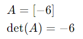
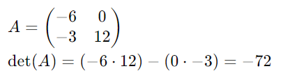
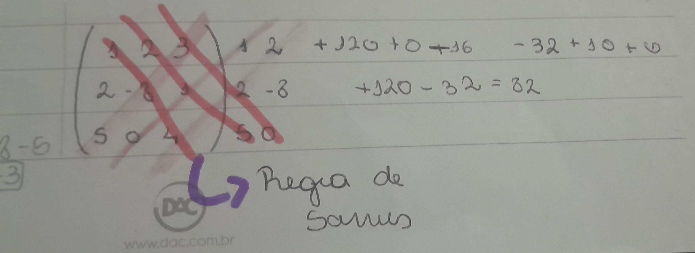

Voltar ao Início |
Auto-Avaliação |
Amortização |
Matrizes |
Determinantes |
Os determinantes são números associados a matrizes quadradas (matrizes com o mesmo número de linhas e colunas). Eles nos ajudam a resolver sistemas de equações lineares, encontrar áreas e volumes, e muitas outras aplicações na matemática e engenharia.
Em matrizes 1x1 que só possuem um elemento, o determinante é o próprio elemento
Em matrizes 2x2, é preciso fazer uma multiplicação cruzada, depois disso, fazer uma subtração dos resultados
Em matrizes 3x3, vamos precisar utilizar a regra de Sarrus
Ou seja, vamos repetir as duas primeiras linhas da matriz ao lado direito dela
Com as colunas repetidas ao lado direito, vamos multiplicas os valores das diagonais principais e depois somá-los, como mostra na imagem
Depois vamos somar os elementos obtidos pela multiplicação das diagonais principais
Agora vamos fazer a multiplicação das diagonais secundárias
Somas os valores obtidos:
Agora, vamos subtrair a soma da diagonal secundaria da diagonal principal
Por fim, vamos obter o resultado, No caso o determinante desta matriz é 72
Para matrizes de ordem maior que 3, utilizamos métodos como o Teorema de Laplace e a Regra de Chió. A Regra de Chió transforma a matriz em uma matriz de ordem menor até ser possível calcular o determinante.
Calcule o determinante de uma raiz 2x2
Mostrar resolução exemplo 1Calcule o determinante de uma matriz 3x3 usando a regra de Sarrus
Mostrar Resolução exemplo 2Calcule o determinante de uma matriz maior que 3x3 usando a regra de Chio
Mostrar resolução exemplo 3
Voltar ao Início |
Auto-Avaliação |
Anuidades |
Amortização |
Matrizes |
Determinantes |